Scale H so that ‖H‖ has a convenient magnitude (e.g., set H33 = 1).
Optionally use the homogeneous 9-parameter DLT with SVD by stacking rows
[−x, −y, −1, 0, 0, 0, x x′, y x′, x′] and
[0, 0, 0, −x, −y, −1, x y′, y y′, y′], then take the right singular vector with the smallest singular value and reshape to H.
A.3
Original, NN, Bilinear.\n Warp (NN) took 1.840 s (1840.3 ms)
Warp (Bilinear) took 4.307 s (4307.2 ms)
Original, NN, Bilinear.\n Warp (NN) took 3.125 s (3124.7 ms)
Warp (Bilinear) took 6.625 s (6625.3 ms).
Original, NN, Bilinear.\n Warp (NN) took 0.328 s (328.2 ms)
Warp (Bilinear) took 0.699 s (698.5 ms)
Compute output canvas bounds by projecting the four corners of the source image through H and taking min/max of the projected coordinates together with the reference image corners.
Use inverse mapping for each output pixel (u, v): compute [x, y, w]T = H−1[u, v, 1]T, then x̃ = x/w, ỹ = y/w.
Sample the source image at (x̃, ỹ) using bilinear interpolation for smoother results (nearest neighbor is acceptable for speed).
Composite the warped image onto the reference:
Simple overwrite in non-overlap regions.
In overlap, use feathering with weights that decay from each image’s boundary, or use a linear alpha ramp.
Return the stitched mosaic and the warp grid if needed for debugging.
NN is faster but Bilinear produces better quality
A.4
Caption (H4 Group 1 — two images).
Caption (H4 Group 1 — single image).
Caption (H4 Group 2 — two images).
Caption (H4 Group 2 — single image).
Caption (H4 Group 3 — two images).
Caption (H4 Group 3 — single image).
Plot correspondences by drawing the two images side by side, offsetting the second image’s x-coordinates, and connecting matched points with line segments.
Overlay the point locations on their respective images by drawing small circles at (x, y) and (x′, y′) with index labels.
Visualize the warp by projecting a regular grid from the source image through H and drawing the transformed grid on the mosaic.
Measure runtime for a function call such as imwarp = warpImageNearestNeighbor(im, H) using a high-resolution timer:
t0 = now, run the function, t1 = now, Δt = t1 − t0.
Report pixel count, interpolation mode, and elapsed time to compare performance across settings.
Part B.1
Original imagewithout ANMSwith ANMS
Compute corner strength f(xi) (e.g., Harris response) for each interest point.
For every point xi, find its suppression radius ri:
Here, xj are stronger neighbors, and crobust ≈ 0.9 ensures the neighbor must be significantly stronger.
The radius ri measures how far you must go from xi to find a clearly stronger corner.
Strong isolated points → large ri
Weak clustered points → small ri
Select the top N points with the largest radii — these are spatially diverse yet strong corners.
Part B.2
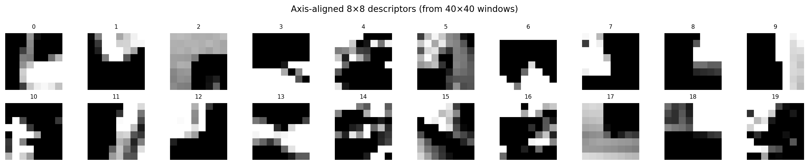
20 descriptors
For each retained corner xi, extract a square grayscale patch centered at xi (e.g., 40×40 pixels) using interpolation to handle subpixel locations.
Downsample or blur the patch to reduce noise and small misalignments (e.g., blur then resize to 8×8 or 16×16).
Vectorize the patch to get pi. Normalize to achieve invariance to contrast:
p̄i = (pi − μi) / (σi + ε)
where μi is the mean intensity of the patch, σi its standard deviation, and ε is a small constant.
Optionally clamp the values to a fixed range to reduce outliers (e.g., clip to [−3, 3]), then renormalize to unit length. The resulting descriptor is di.
Store (xi, di) for matching.
Part B.3
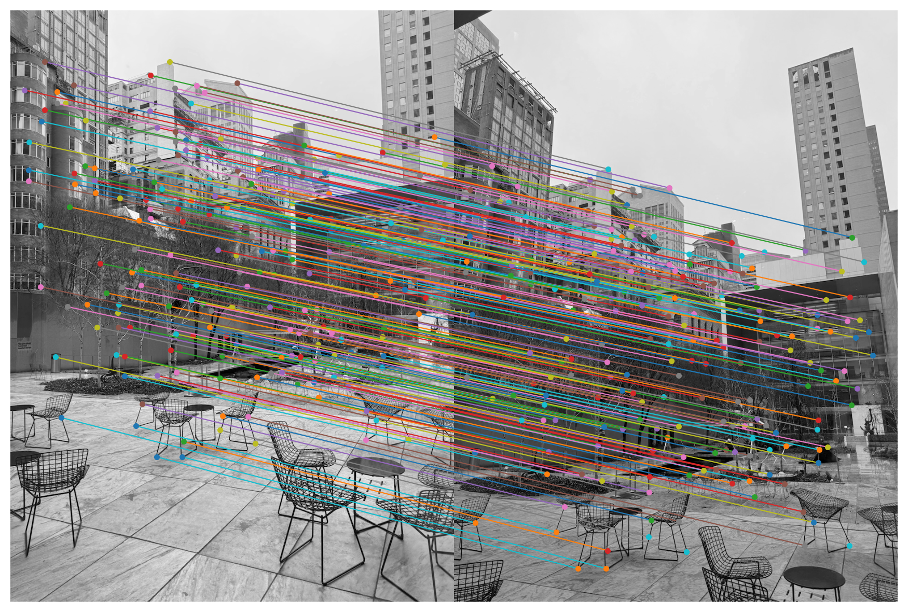
matched features
Given descriptors di from image A and d′j from image B, compute pairwise distances using SSD:
SSD(i, j) = ‖di − d′j‖2
For each di, find its two nearest neighbors in B with distances s1 ≤ s2.
Apply the ratio test to reject ambiguous matches:
s1 / s2 < τ
where τ is typically 0.7–0.8. Pairs failing the test are discarded.
Optionally enforce mutual consistency: keep (i, j) only if i is the best match for j and j is the best for i.
The surviving pairs (xi ↔ x′j) are candidate correspondences.
Part B.4
Part A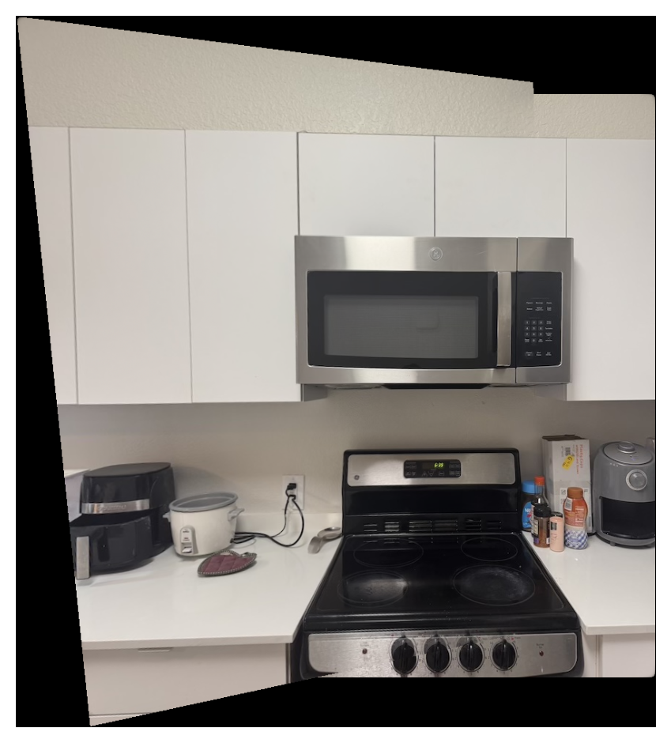Auto Mosaic
Part A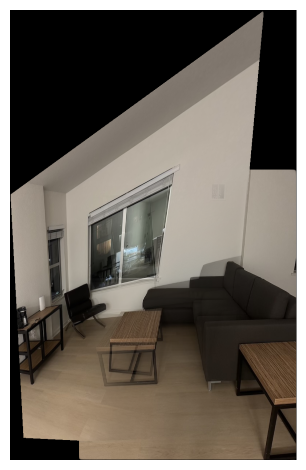Auto Mosaic
Part A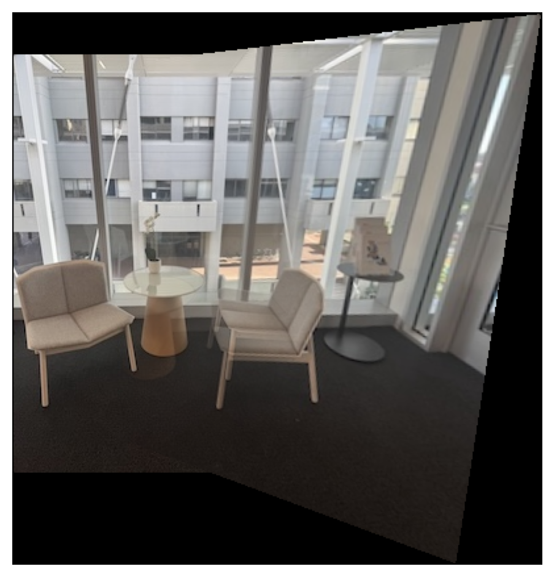Auto Mosaic
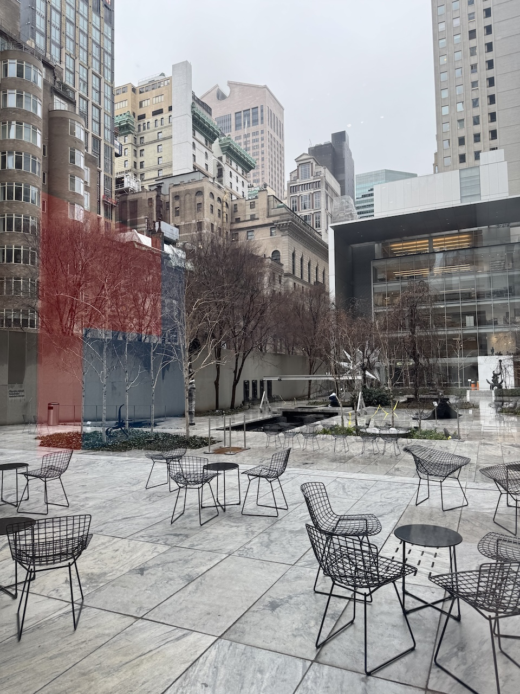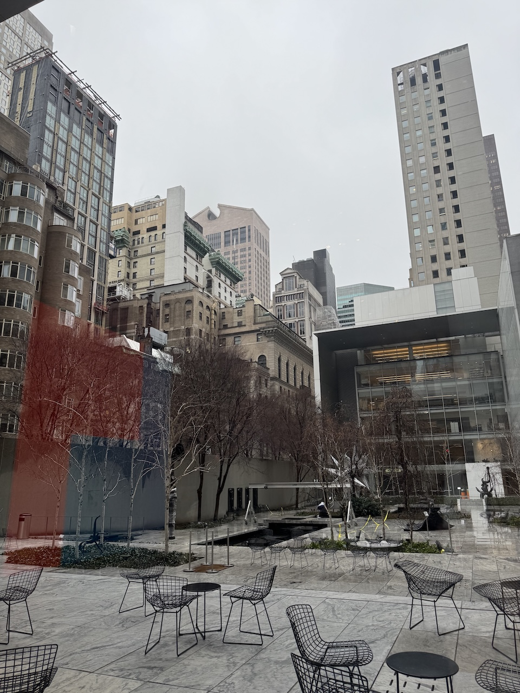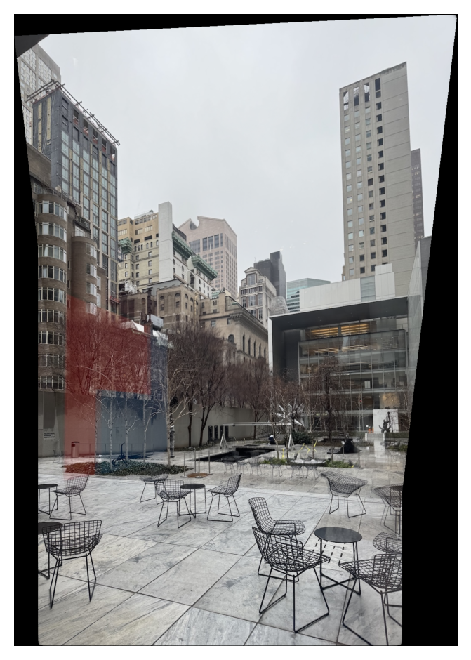
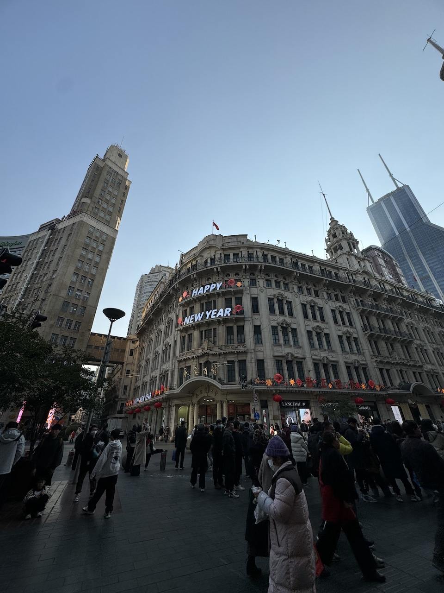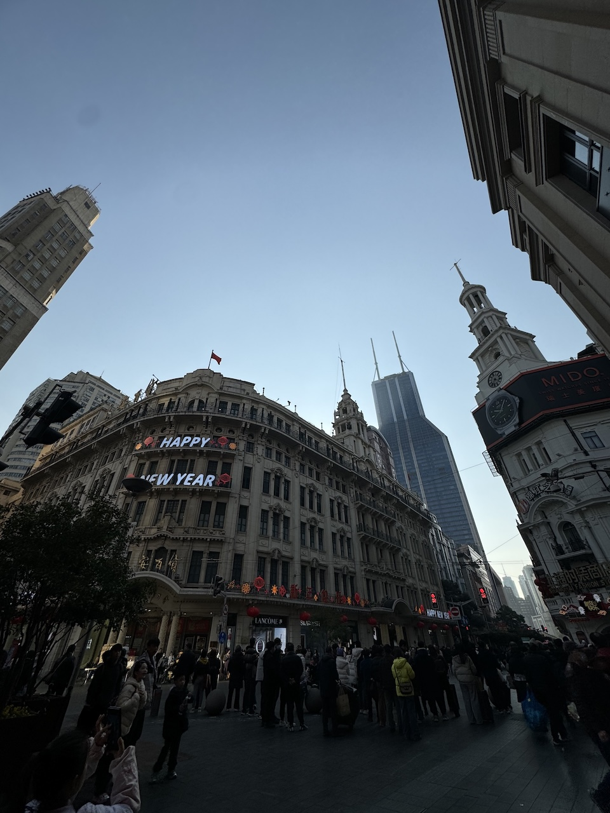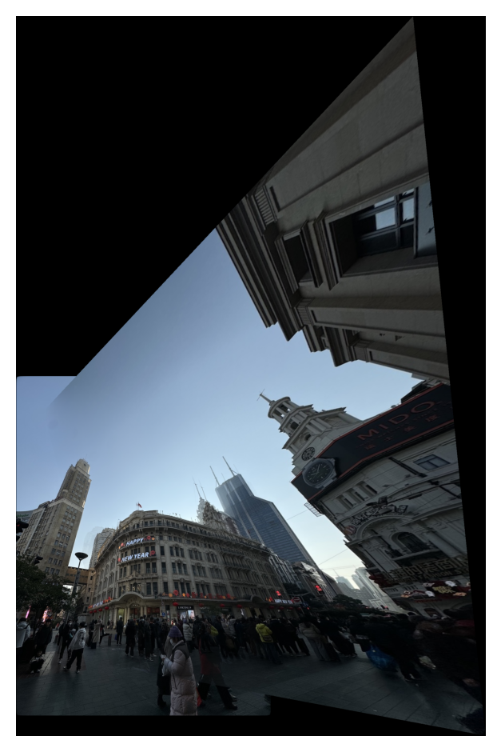
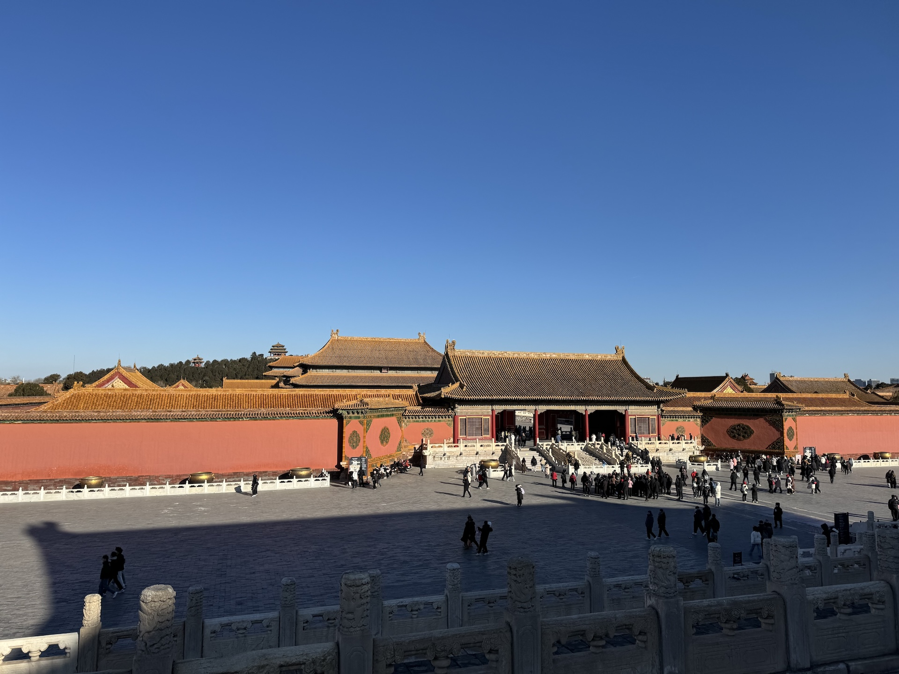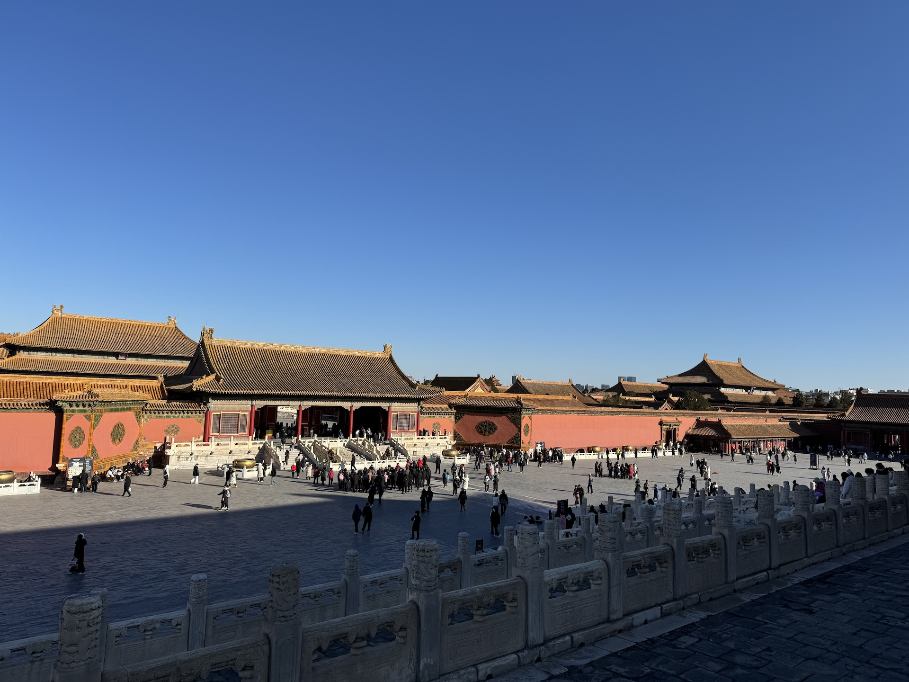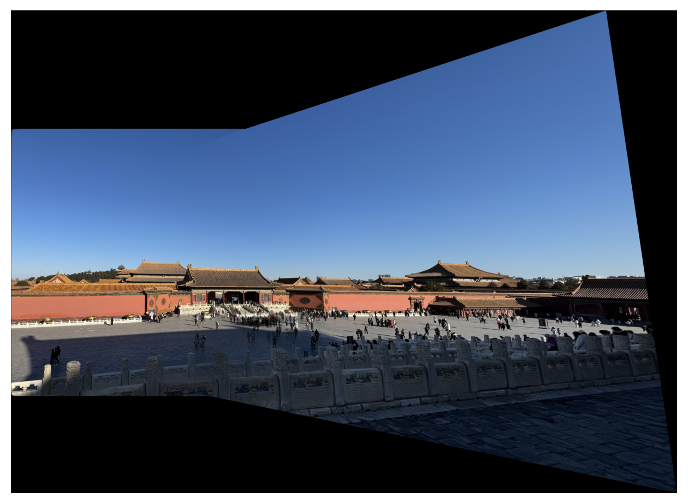
Input the candidate correspondences (xi ↔ x′j). Define an inlier threshold ε in pixels for reprojection error.
Repeat for N iterations:
Randomly sample 4 correspondences and estimate a homography H using the DLT formulation.
Project points from A to B: x̂′ = H x (homogeneous coordinates), then normalize.
Compute reprojection error e = ‖x̂′ − x′‖. Mark a correspondence as an inlier if e < ε.
Keep the hypothesis H with the largest inlier set. Refit H using all inliers via least squares for the final estimate.
Return H and the inlier correspondences for downstream warping and blending.